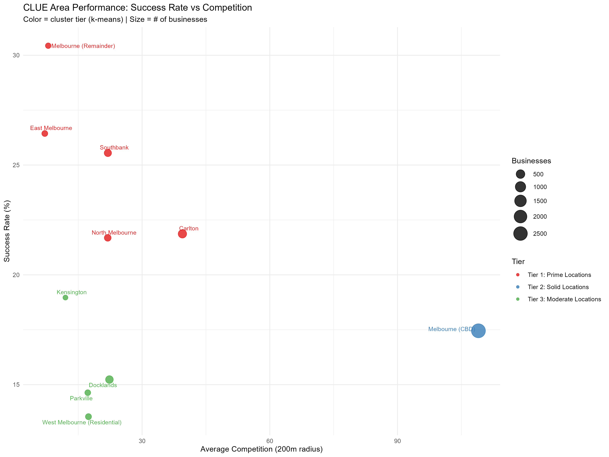
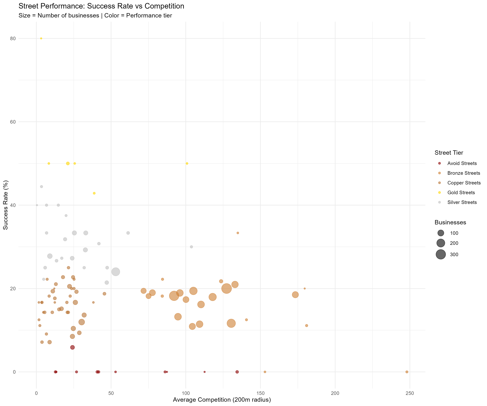
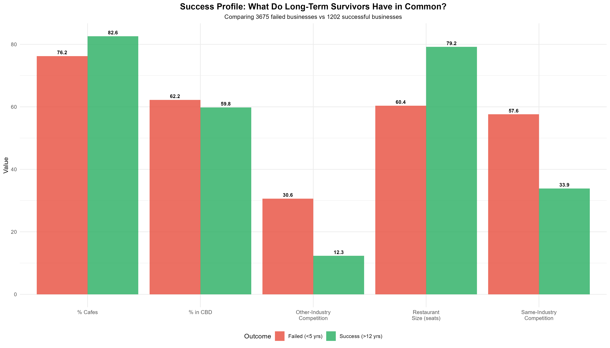
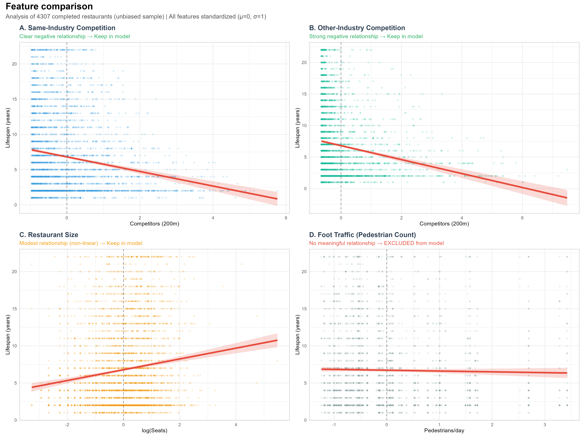
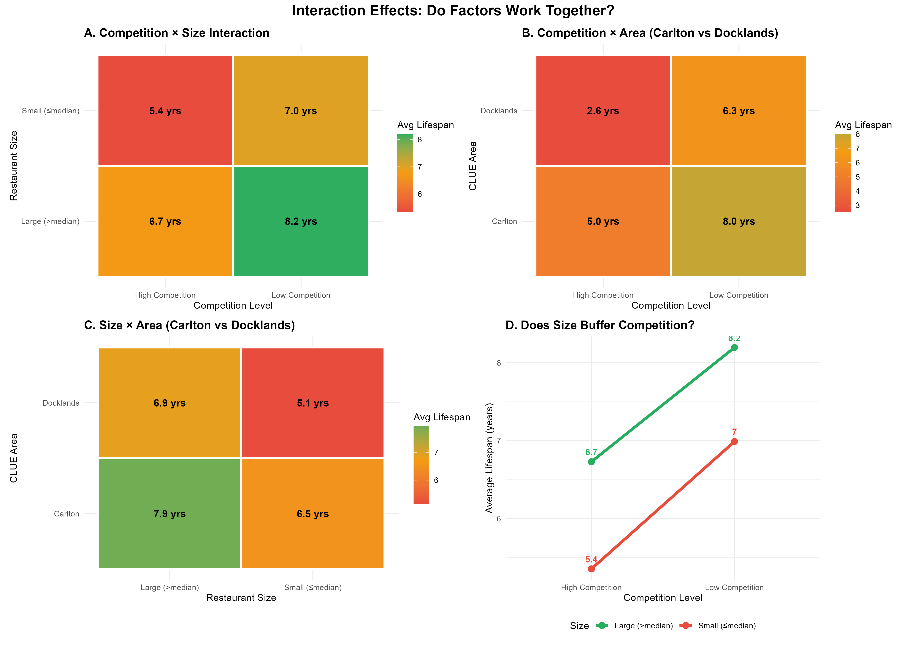

Melbourne Restaurant Expansion
Data-Driven Site Selection & Market Analysis for Strategic Growth
Agenda
- The Project & Client Background
- Data Sources & Challenges
- Analytic Methods
- Key Findings
- Recommendations & Future Work
The project
OUR CONSULTING SCOPE
OPERATIONAL EXCELLENCE:
- Workforce optimization
SUPPLY CHAIN OPTIMIZATION:
- Logistics efficiency
CENTRAL KITCHEN INNOVATION:
- Cost reduction
- Quality consistency
STRATEGIC EXPANSION:
- Restaurant longevity analysis
- Location risk assessment
Our client
Established:
- 2023 (Recent market entrant)
Current Operations:
- Successfully operating in QLD & NSW
- Rapid growth in first 2 years
Business Model:
- Asian dining
- 40-80 seats per location
- Full-service restaurant
Financial Position:
- Strong cash flow from existing operations for expansion
Growth Strategy:
- 5+ new locations nationwide by 2027
KEY BUSINESS QUESTIONS
MARKET LANDSCAPE
What is the current state of market?
GEOGRAPHIC RISK PROFILING
Where are the proven winners?
COMPETITION IMPACT
Should we seek out busy dining precincts or avoid them?
BUSINESS SIZING STRATEGY
What restaurant size has the best survival?
KEY BUSINESS QUESTIONS (cont.)
Foot Traffic Value
Is foot traffic a reliable predictor of success?
Decision Tools
Can we build an interactive decision tool for market and location profiling?
Data
DATA SOURCE
CLUE - Business Census (2002-2023)
- 36,315 total records
Pedestrian Counting System (2009-Present)
- 143 sensors measuring hourly foot traffic
Integration:
- Matched restaurants to nearest sensors (200m radius)
Source: City of Melbourne Open Data Portal (data.melbourne.vic.gov.au)
FINAL DATASET SUMMARY
- 4,200 unique businesses
- 1,838 operating businesses
- 2 industries
- 15 CLUE areas
- 317 unique streets
- 2,850 unique properties
Methods
ANALYTICAL METHODS
EDA
- What patterns exist in the data?
- Trend / distribution / survival patterns
PCA + CLUSTERING ANALYSIS
- Group locations by performance
- 3 area tiers + 5 street tiers
PREDICTIVE MODELING - RANDOM FOREST
- Quantify feature importance
- Random Forest with 5-fold CV, hyperparameter tuning
LINEAR RELATIONSHIP ANALYSIS
- Validate directionality of key features
- Correlation analysis, scatter plots
Descriptive Comparison
lifecycle stage
Multi-factor exploration
Findings
CLUSTERING - AREA TIERS
TIER 1: PRIME LOCATIONS (red) Higher Priority
Avg Lifespan: 7.8 years
Success Rate: 28%
TIER 2: SOLID LOCATIONS (blue)
Avg Lifespan: 6.5 years
Success Rate: 22%
TIER 3: MODERATE LOCATIONS (green)
Avg Lifespan: 5.8 years
Success Rate: 18%

CLUSTERING - Where are the best streets?
Gold streets (yellow) Higher Priority: cluster at low competition + high success
Avoid streets (dark red) cluster at moderate competition + 0% success
Most streets are Copper/Bronze (middle mass)

Success Profile
Long-lifespan venues tend to be:
Larger in seating capacity
Facing lower competition density

RANDOM FOREST FEATURE IMPORTANCE
- Both same and other-industry competition are harmful
- Larger: scale buffers risk.
- Property-level competition still hurts performance
- Postcode effects vary

FEATURE SELECTION: WHAT PREDICTS SURVIVAL?
INCLUDED IN MODEL:
- Same-Industry Competition: Linear negative
- Other-Industry Competition: Strongest negative
- Restaurant Size: Non-linear positive
- Foot Traffic: No relationship
KEY INSIGHT:
- Competition matters most
- NO sweet point

Interaction Effects
Factor work together:
Size DOES buffer competition
Prime postcode buffer competition
combined effects are more important

Summary
✓ Competitions is the main risk factor.
✓ Multi-restaurant buildings shorten lifespan.
✓ Suburb effects exist, but no single postcode guarantees success
✓ Seating size: optimize size with budget rather than chasing scale.
Recommendations
Further improvement
FUTURE DATA ENHANCEMENTS:
- Rental costs (explain survival differences)
- Street segmentation (divide long streets into blocks for precise analysis)
- Price point & cuisine type (fine dining vs casual, Italian vs Asian)
- Online ratings (satisfaction proxy)
- Demographic data (income, age, population density by area)
- Economic indicators (unemployment rate, consumer confidence trends)
Thank You
Questions?
Melbourne Restaurant Expansion Analysis